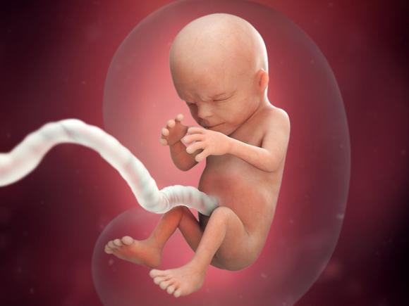

Second Trimester
Weeks 14-27
**Tap each image for more information**
Your baby's brain impulses have begun to fire and he's using his facial muscles. His kidneys are working now, too. If you have an ultrasound, you may even see him sucking his thumb. Your baby is the size of a lemon.
Your baby's eyelids are still fused shut, but she can sense light. If you shine a flashlight on your tummy, she'll move away from the beam. Ultrasounds done this week may reveal your baby's sex. Your baby is the size of an apple.
The patterning on your baby's scalp has begun, though the hair isn't visible yet. His legs are more developed – find out when you're likely to feel your baby kick! His head is more upright, and his ears are close to their final position. Your baby is the size of an avocado.
Your baby can move her joints, and her skeleton formerly soft cartilage is now hardening to bone. The umbilical cord is growing stronger and thicker. Your baby is the size of a turnip.
Your baby is flexing his arms and legs, and you may be able to feel those movements. Internally, a protective coating of myelin is forming around his nerves. Your baby is the size of a bell pepper.
Your baby's senses – smell, vision, touch, taste and hearing are developing and she may be able to hear your voice. Talk, sing or read out loud to her, if you feel like it. Your baby is the size of an heirloom tomato.
Your baby can swallow now and his digestive system is producing meconium, the dark, sticky goo that he'll pass in his first poop – either in his diaper or in the womb during delivery. Your baby is the size of a banana.
Your baby's movements have gone from flutters to full-on kicks and jabs against the walls of your womb. You may start to notice patterns as you become more familiar with her activity. Your baby is the size of a carrot.
Your baby now looks almost like a miniature newborn. Features such as lips and eyebrows are more distinct, but the pigment that will color his eyes isn't present yet. Your baby is the size of a spaghetti squash.
Your baby's ears are getting better at picking up sounds. After birth, she may recognize some noises outside the womb that she's hearing inside now. Your baby is the size of a large mango.
Your baby cuts a pretty long and lean figure, but chubbier times are coming. His skin is still thin and translucent, but that will begin to change soon too. Your baby is the size of an ear of corn.
Your baby's wrinkled skin is starting to fill out with baby fat, making her look more like a newborn. Her hair is beginning to come in, and it has color and texture. Your baby is now the same weight as an average rutabaga.
Your baby is now inhaling and exhaling amniotic fluid, which helps develop his lungs. These breathing movements are good practice for that first breath of air at birth. Your baby is the size of a bunch of scallions.
This is the last week of your second trimester. Your baby now sleeps and wakes on a regular schedule, and her brain is very active. Her lungs aren't fully formed, but they could function outside the womb with medical help. Your baby is the size of a head of cauliflower.